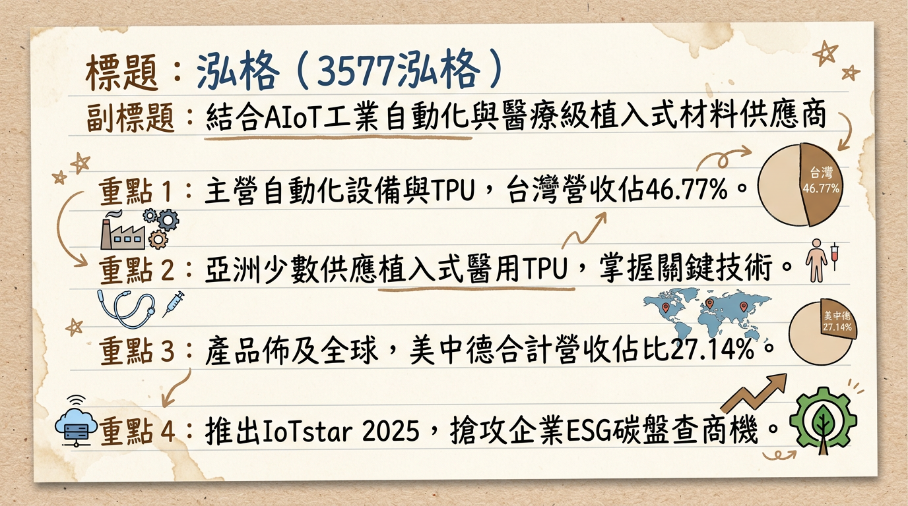
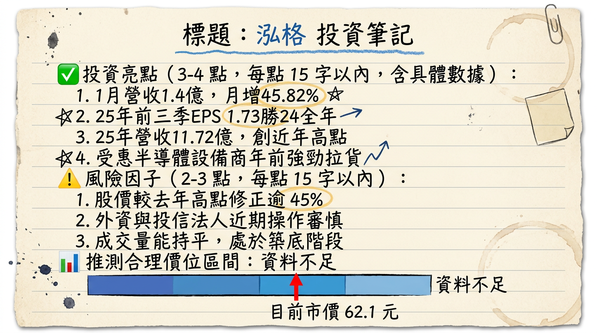

3577泓格 深度研究報告
一句話摘要
泓格（ICP DAS）成功轉型為「AIoT + ESG + 醫療 TPU」高毛利三引擎驅動企業，受惠於半導體 2 奈米擴產及醫用材料進口替代效應，2026 年獲利動能進入爆發期。
公司概覽
泓格科技成立於 1993 年，為資深工業電腦（IPC）廠商。近年透過核心技術延伸，由傳統工業自動化跨足智慧能源管理（ESG）與高階生醫材料領域。
營收結構分析（2024-2025 綜合數據）：| 業務/區域 | 營收佔比 | 核心產品與應用 |
|---|---|---|
| 半導體設備 | >30% (2025 預估) | 利基型控制器、EtherCAT 通訊解決方案、廠務自動化 |
| 傳統工控/ESG | 50-60% | 智慧電錶 PMC-284xM、IoTstar 雲端軟體、邊緣運算控制器 |
| 醫療級 TPU | 快速成長中 | 泓格生醫品牌 (Arothane™)；植入式導管、導絲塗層 |
| 地區：台灣 | 46.77% | 服務台積電等一線半導體大廠 |
| 地區：海外 | 53.23% | 中國(16.4%)、美國(6.3%)、德國(4.4%)、其他(25.6%) |
核心競爭優勢
財務分析
近 6 個月月營收趨勢表：| 月份 | 營收金額 (億元) | 月增率 (MoM) | 年增率 (YoY) | 簡評 |
|---|---|---|---|---|
| 2026/01 | 1.40 | +45.82% | +5.53% | 創近 112 個月新高，年初拉貨強勁 |
| 2025/12 | 0.96 | -16.58% | +34.26% | 2025 全年營收結算亮眼 |
| 2025/11 | 1.15 | +22.95% | -0.22% | 訂單回流動能顯現 |
| 2025/10 | 0.94 | +22.58% | +25.99% | 止跌回升，半導體專案啟動 |
| 2025/09 | 0.76 | -16.31% | -28.66% | 第三季傳統季節性調整 |
| 2025/08 | 0.91 | -0.03% | -32.03% | 庫存去化尾聲 |
- 2024 實際： 營收 10.71 億元，EPS 1.62 元。
- 2025 實際（自結）： 營收 11.72 億元（創新高），前三季累計 EPS 1.73 元。法人預估全年 EPS 約 2.1-2.2 元。
- 2026 展望： 法人預期營收挑戰 13-14 億元，EPS 預估區間 2.50 - 2.85 元。
法說會重點
- 醫療級 TPU： 在手客戶已破 100 家，隨 Lubrizol 供應吃緊，2026 年轉單放量效益將優於 2025。
- 產能產值： 二廠年產能規劃為 2,000 噸，若滿載運作，單一生醫事業部年產值可達 30-40 億元。
- 訂單能見度： 半導體關鍵客戶 2 奈米廠務需求明確，能見度已看到 2026 年上半年。
- 海外策略： 積極擴張美國矽谷辦事處，爭取美系半導體設備商（如應材）在地化訂單。
券商觀點
| 券商名 | 目標價 | 評等 | 日期 | 核心觀點 |
|---|---|---|---|---|
| Factset 市場共識 | 62 - 75 元 | 中立偏多 | 2026/02 | 反映 32 倍 PE，看好醫材長期成長。 |
| 本土投顧法人 | -- | 調升 | 2026/01 | 醫材業務轉盈，半導體訂單回流。 |
| 第一金證券 | -- | 中立偏多 | 2025/12 | 自動化需求隨降息預期回溫。 |
財報深度分析
利潤率趨勢表：| 季度 | 毛利率 (%) | 營業利益率 (%) | 稅後淨利率 (%) | EPS (元) |
|---|---|---|---|---|
| 2025 Q3 | 52.66% | 12.35% | 10.46% | 0.42 |
| 2025 Q2 | 54.31% | 18.10% | 13.75% | 0.65 |
| 2025 Q1 | 53.17% | 18.35% | 15.70% | 0.66 |
| 2024 Q4 | 52.75% | 11.05% | 9.69% | 0.38 |
- 存貨分析： 2025 Q3 存貨週轉天數 355 天，主因為工控長單備料及醫材認證需求，負債比僅 14.16%，財務極其穩健。
- 資本支出： 2025 年引進最新 SMT 設備，產能提升 20-25%，預計 2026 年進入產能收益期。
股權異動
- 2026/02/11： 董事長葉廼迪、大股東陳瑞煜申報「贈與」轉讓合計約 81 張股票予子女。
- 分析： 此為家族資產規劃，非二級市場拋售，對公司經營權與籌碼面無負面影響。目前大股東持股佔比約 12%，結構穩定。
產業分析
競爭格局比較表（2025-2026 預估）：| 比較項目 | 泓格 (3577) | 研華 (2395) | 路博潤 (Lubrizol) |
|---|---|---|---|
| 核心優勢 | 高毛利醫材+精準自動化 | 全球品牌與規模化 | 醫用 TPU 全球龍頭 (對手) |
| 毛利率預估 | 48.5% - 53% | 40.2% | 55% 以上 |
| 2026 成長性 | 高 (醫材爆發) | 穩定 (IPC 龍頭) | 穩定 |
| 價格策略 | 高性價比、高客製化 | 中高價、標準化 | 高價 |
近期催化劑
- 利多：
2. 杜拜 WHX 展後，醫用 TPU ARP-B20 系列訂單詢問度激增。
3. 台積電 2 奈米產線關鍵控制器需求釋出。
- 利空：
2. 國際 TPU 大廠若進行價格戰，可能壓抑醫材毛利。
⭐ 成長動能時間軸
- 2025 Q2： 完成新 SMT 生產線導入，產能提升 20-25%。
- 2025/07： 東京工業展展示 TPU 醫材，獲日本客戶試料。
- 2025/11： 獲取國內軌道交通 ESG 監控大案。
- 2026/01： 杜拜 WHX 展發表「自潤滑」TPU 新品。
- 2026 Q2： 預計半導體設備訂單進入大規模交付期。
- 2026 全年： 醫療 TPU 目標營收佔比拉升至 15% 以上。
2026 展望
- 成長動能：
* ESG 控制器： 全球碳稅實施，PMC 系列產品需求年增率上看 20%。
- 風險：
* 存貨水位較高需關注去化速度。
投資結論
本報告由 AI 自動產生，資料來源為公開網路資訊，僅供參考，不構成投資建議。產生時間：2026-03-01 21:31
📊 資訊卡


